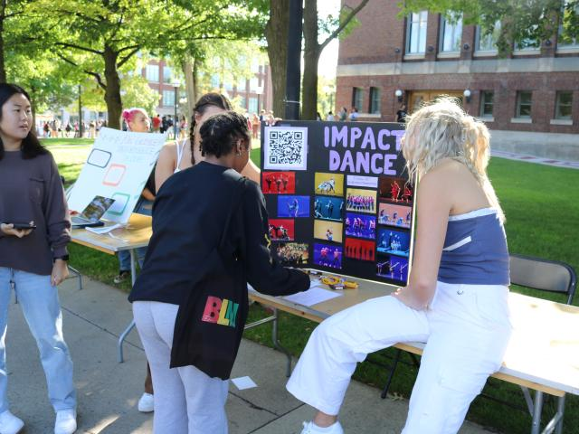

Resources for community building
The University of Michigan offers a diverse range of student communities, from academic and
professional groups to cultural clubs and sports teams, fostering an inclusive campus environment.
These communities provide opportunities for personal growth, networking, and a sense of belonging.
Through service projects, cultural events, and discussions, students can find a niche that aligns
with their interests, enriching their university experience and contributing to campus life.
Student Organizations

Student organizations at the University of Michigan are key to the campus experience,
allowing students to explore interests, develop leadership skills, and build connections.
With over 1,700 groups spanning academic, cultural, social, and service areas, there are
opportunities for everyone. These organizations help students apply classroom knowledge,
collaborate on projects, and build lasting networks, enriching their university experience
and contributing to the vibrant campus culture. For more information, visit
the Student Organizations website.
First-Generation Student Center

The First-Generation Student Center at the University of Michigan supports first-gen students
with academic advising, financial aid guidance, and career counseling. It fosters community
by offering a welcoming space for students to connect, attend workshops, and participate in
social events. Through tailored support and advocacy, the center promotes equity, helping
students overcome barriers, celebrate their identities, and achieve their goals. For more
information, visit
the First-Generation Student Center website.